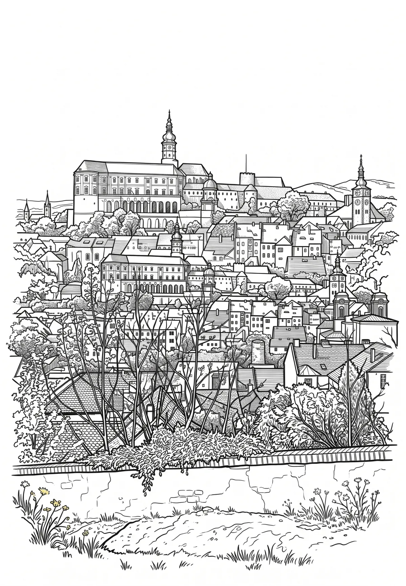

Mikulov
Jihomoravský kraj · 242 m n. m.

město · #042
Mikulov (německy Nikolsburg) je město v okrese Břeclav v Jihomoravském kraji. Leží osmnáct kilometrů západně od Břeclavi poblíž hraničního přechodu Drasenhofen s rakouskou spolkovou zemí Dolní Rakousy. Žije zde přibližně 7 600 obyvatel. Historické jádro je městskou památkovou rezervací.